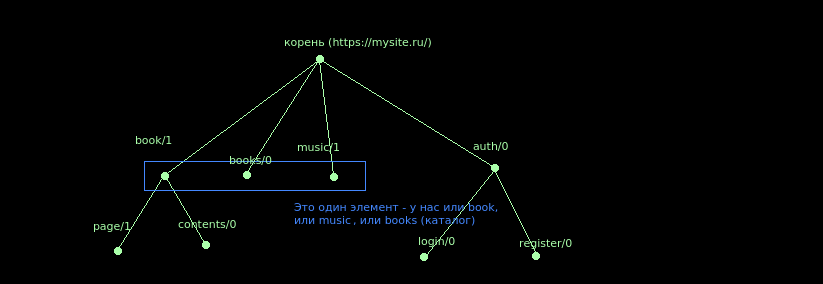

НАВЕРХ
tree
Дерево переходов между URL при изменении объекта состояния.
Формат дерева
URL определяется по структуре дерева и по наличию/отсутствию тех или иных подсостояний (свойств у объекта состояния).
Рассмотрим, какие могут быть элементы в URL. Пусть у нас пользователь открыл книгу с id=803, открыл страницу 85, открыл оглавление, а потом вдруг решил, что ему надо залогиниться. URL страницы авторизации будет иметь следующий вид:
https://mysite.ru/book/803/page/85/contents/auth/login
Обратим ваше внимание на то, что пользователь мог открыть и не книгу (у нас может быть, например, вкладка с музыкой для тех, кому не интересно читать книжки), оглавление мог открыть и не открывая книги (когда нет открытой страницы).
Элементы вышеуказанного URL:
- book с одним параметром (803)
- page с одним параметром (85)
- contents без парметров
- auth
- login
Дерево переходов у нас имеет следующий вид:

В коде это выглядит следующим образом:
[
{
book: {
d: [
{
page: {...}
},
{
contents: {...}
}
],
...
},
books: {...},
music: {...}
},
{
auth:{
d: [
{
login: {...}
},
{
register: {...}
}
],
...
}
}
]
Внутри самого узла уже описывается, имеет ли узел парметры и сколько, а также признаки, когда узел должен быть активным.
Формат узла дерева
Узел может иметь следующие свойства:
- default - (boolean, значение по умолчанию - false). Если пользователь перешёл на URL, который по этому дереву заканчивается на узле, у которого есть свойство с default, то URL будет продолжен. У одного узла не может быть более одного свойства с default.
- substate - подсостояние (относительно родительского элемента), которое должно быть доступно. Если подсостояние не доступно (или undefined), элемент не будет отображён в URL.
- name - если задано, то для того, чтобы узел был отображён в URL, необходимо также, чтобы в вышеуказанном подсостоянии была строка с указанным здесь значением.
- *in - функция инициализации состояния. Вызывается, когда пользователь переходит по такому URL.
- *out - функция деструкции состояния. Вызывается, когда пользователь уходит с такого URL.
- params - массив подсостояний, в которых хранятся в строковом виде параметры узла. Можно задавать значения по умолчанию через знак '=' (если не указано значение по умолчанию для следующих после {параметром со значением по умолчанию}, таковым считается пустая строка). Значения считываются и записываются в виде строк. Значения по умолчанию могут быть лишь для конечных узлов: для улов дерева, имеющих детей, использование значений по умолчанию недопустимо.
- *changed - функция, которая вызывается при изменении параметра(параметров)
- d - дочерние узлы (массив)
- extender_url - для динамической подгрузки. Сетевой путь (имя) к директории, где лежит код для подгрузки. Подгружаемый код находится в директории children.
- extender_slotwidget - для динамической подгрузки. Идентификатор виджета, в который встраивать подгружаемый контент.
- extender_loadmode - режим загрузки:
- отсутствует или undefined (по умолчанию) - грузит по обращению, выгружает по деактивации
- 'save' - по обращению грузит и более не выгружает
- 'preload' - грузит сразу при старте страницы и более не выгружает